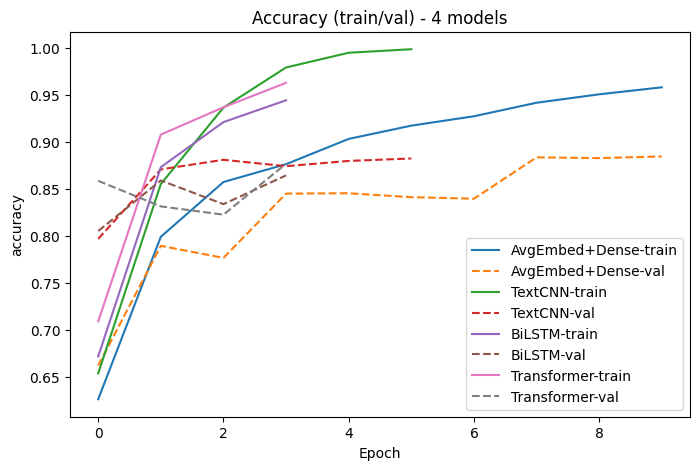

MLDL 딥러닝 분류 - 사례분석 텍스트 분류
딥러닝 분류 사례분석 (텍스트 분류 Sentiment Analysis)
1. 데이터
IMDB 데이터셋은 딥러닝 기반 텍스트 분류(감성분석) 모델의 성능을 비교·평가하기 위한 대표적 벤치마크 데이터로, 영화 리뷰 텍스트가 담고 있는 전반적 평가의 극성(polarity)—즉 긍정(positive)인지 부정(negative)인지—을 예측하는 것을 분석목적으로 한다. 본 실습에서는 리뷰 한 편을 하나의 “문서(document)”로 보고, 문서 수준에서 감성을 판별하는 이진 분류(binary classification) 문제로 설정한다.
데이터는 Keras에서 기본 제공되는 IMDB 리뷰 코퍼스를 사용하며, 학습용 25,000개와 테스트용 25,000개로 총 50,000개의 리뷰로 구성된다. 라벨은 0(부정)과 1(긍정) 두 범주로 주어지며, 학습 데이터에서 각 클래스가 12,500개씩으로 완전 균형(class-balanced)을 이루어, 모델 비교 시 특정 클래스 편향에 의한 성능 왜곡을 최소화하도록 설계되어 있다. 본 노트에서는 학습 데이터(25,000개) 중 20%를 검증용으로 분리하여 Train 20,000 / Valid 5,000 / Test 25,000 구조로 학습–튜닝–최종평가의 역할을 명확히 분리한다.
입력 데이터는 원문 텍스트가 아니라, 사전에 구축된 단어 사전(word index)에 따라 단어를 정수 인덱스로 치환한 정수 시퀀스 형태로 제공된다. 이는 모델이 단어 임베딩(Embedding)을 통해 의미 공간으로 매핑한 뒤, CNN·RNN·Transformer 등 다양한 신경망 구조가 분류에 필요한 표현을 학습할 수 있도록 하기 위함이다. 또한 본 분석에서는 상위 빈도 단어 20,000개(vocab_size=20000)만 사용하여 희귀어에 따른 잡음을 줄이고, 모델 학습의 안정성과 계산 효율을 높인다. 참고로 Keras가 제공하는 전체 단어 사전 크기는 88,584개이며, 본 실습은 그중 빈도 상위 부분집합을 사용한다.
문서 길이는 리뷰마다 상이하므로, 배치 학습이 가능하도록 모든 시퀀스를 동일 길이로 맞추는 전처리가 필요하다. 본 노트는 최대 길이 300(maxlen=300)으로 설정하여, 길이가 짧은 리뷰는 뒤쪽(post)으로 패딩을 추가하고, 긴 리뷰는 뒤쪽(post)에서 절단(truncation)한다. 결과적으로 입력 텐서는 학습·검증·테스트 모두 각각 (샘플 수, 300) 형태의 2차원 배열이 되며, 이는 “고정 길이 문서 표현” 위에서 여러 모델 구조를 공정하게 비교하기 위한 표준화 단계이다.
정리하면, 본 데이터는 (1) 문서 수준 이진 감성 분류라는 명확한 예측 목표를 갖고, (2) 클래스 균형이 맞춰진 대규모 리뷰 코퍼스로 구성되며, (3) 정수 토큰 시퀀스와 고정 길이 패딩을 통해 CNN/BiLSTM/Transformer 등 서로 다른 딥러닝 텍스트 분류 모델의 표현 학습 능력과 일반화 성능을 비교하는 데 최적화된 메타 구조를 가진다. 이를 통해 “단어 순서 정보 활용 여부(CNN/RNN/Transformer), 특징 추출 방식(Global pooling vs attention), 모델 복잡도”가 감성 분류 성능(Accuracy, AUC 등)에 어떤 차이를 만드는지 실증적으로 평가하는 것이 본 분석의 핵심 목적이다.
# =========================================================
# 0. Library & Seed 설정
# =========================================================
import numpy as np
import tensorflow as tf
from tensorflow.keras.datasets import imdb
from tensorflow.keras.preprocessing.sequence import pad_sequences
from tensorflow import keras
from tensorflow.keras import layers
from sklearn.model_selection import train_test_split
SEED = 42
np.random.seed(SEED)
tf.random.set_seed(SEED)
# =========================================================
# 1. 데이터 로드 (IMDB)
# =========================================================
vocab_size = 20000 # 상위 빈도 단어만 사용
maxlen = 300 # 문장 최대 길이
(x_train, y_train), (x_test, y_test) = imdb.load_data(
num_words=vocab_size
)
# =========================================================
# 2. Padding / Truncation
# =========================================================
x_train = pad_sequences(
x_train,
maxlen=maxlen,
padding="post",
truncating="post"
)
x_test = pad_sequences(
x_test,
maxlen=maxlen,
padding="post",
truncating="post"
)
# =========================================================
# 3. Train / Validation 분리
# =========================================================
x_tr, x_val, y_tr, y_val = train_test_split(
x_train,
y_train,
test_size=0.2,
random_state=SEED,
stratify=y_train # 클래스 비율 유지
)
print(f"Train: {x_tr.shape}")
print(f"Valid: {x_val.shape}")
print(f"Test : {x_test.shape}")Train: (20000, 300)
Valid: (5000, 300)
Test : (25000, 300)# ==========================================
# IMDB 데이터 샘플 5개 출력
# ==========================================
# 정수 → 단어 사전 로드
word_index = imdb.get_word_index()
reverse_word_index = {v: k for k, v in word_index.items()}
def decode_review(encoded_review):
return " ".join(
reverse_word_index.get(i - 3, "?") for i in encoded_review if i > 3
)
# 3개 샘플 출력
for i in range(3):
print(f"\n===== Sample {i+1} =====")
print("Label :", "Positive" if y_train[i] == 1 else "Negative")
print("Review:", decode_review(x_train[i])[:1000]) # 너무 길어서 1000자까지만===== Sample 1 =====
Label : Positive
Review: this film was just brilliant casting location scenery story direction everyone's really suited the part they played and you could just imagine being there robert is an amazing actor and now the same being director father came from the same scottish island as myself so i loved the fact there was a real connection with this film the witty remarks throughout the film were great it was just brilliant so much that i bought the film as soon as it was released for retail and would recommend it to everyone to watch and the fly fishing was amazing really cried at the end it was so sad and you know what they say if you cry at a film it must have been good and this definitely was also congratulations to the two little boy's that played the of norman and paul they were just brilliant children are often left out of the praising list i think because the stars that play them all grown up are such a big profile for the whole film but these children are amazing and should be praised for what they have
===== Sample 2 =====
Label : Negative
Review: big hair big boobs bad music and a giant safety pin these are the words to best describe this terrible movie i love cheesy horror movies and i've seen hundreds but this had got to be on of the worst ever made the plot is paper thin and ridiculous the acting is an abomination the script is completely laughable the best is the end showdown with the cop and how he worked out who the killer is it's just so damn terribly written the clothes are sickening and funny in equal measures the hair is big lots of boobs bounce men wear those cut tee shirts that show off their sickening that men actually wore them and the music is just trash that plays over and over again in almost every scene there is trashy music boobs and taking away bodies and the gym still doesn't close for all joking aside this is a truly bad film whose only charm is to look back on the disaster that was the 80's and have a good old laugh at how bad everything was back then
===== Sample 3 =====
Label : Negative
Review: this has to be one of the worst films of the 1990s when my friends i were watching this film being the target audience it was aimed at we just sat watched the first half an hour with our jaws touching the floor at how bad it really was the rest of the time everyone else in the theatre just started talking to each other leaving or generally crying into their popcorn that they actually paid money they had working to watch this feeble excuse for a film it must have looked like a great idea on paper but on film it looks like no one in the film has a clue what is going on crap acting crap costumes i can't get across how this is to watch save yourself an hour a bit of your life초기화 + 콜백 + 평가/시각화/오분류 함수
import os, random
import numpy as np
import pandas as pd
import tensorflow as tf
from tensorflow import keras
from tensorflow.keras import layers
from sklearn.metrics import accuracy_score, roc_auc_score, confusion_matrix, classification_report
# --- 안정화: 재현성 & 세션 정리 ---
SEED = 42
os.environ["PYTHONHASHSEED"] = str(SEED)
random.seed(SEED)
np.random.seed(SEED)
tf.random.set_seed(SEED)
keras.backend.clear_session()
# (선택) GPU 사용 시 메모리 증가 허용
gpus = tf.config.list_physical_devices("GPU")
if gpus:
try:
for gpu in gpus:
tf.config.experimental.set_memory_growth(gpu, True)
except Exception as e:
print("GPU memory growth setting skipped:", e)
# --- 공통 콜백 ---
cb = [
keras.callbacks.EarlyStopping(monitor="val_auc", mode="max", patience=2, restore_best_weights=True),
keras.callbacks.ReduceLROnPlateau(monitor="val_auc", mode="max", factor=0.5, patience=1, min_lr=1e-5),
]
# --- 공통 평가 함수 ---
def eval_binary_model(model, x, y, name):
p = model.predict(x, batch_size=512, verbose=0).ravel()
yhat = (p >= 0.5).astype(int)
acc = accuracy_score(y, yhat)
auc = roc_auc_score(y, p)
cm = confusion_matrix(y, yhat)
return {
"model": name,
"test_acc": float(acc),
"test_auc": float(auc),
"TN": int(cm[0,0]), "FP": int(cm[0,1]),
"FN": int(cm[1,0]), "TP": int(cm[1,1]),
}
# --- 학습결과 저장소 (중요: 딱 한 번만) ---
histories = {}
results = []
models = {}
# --- 학습곡선 플롯 ---
import matplotlib.pyplot as plt
def plot_histories(histories, metric="accuracy", title=None):
plt.figure(figsize=(8,5))
for name, h in histories.items():
if metric in h.history:
plt.plot(h.history[metric], label=f"{name}-train")
val_key = f"val_{metric}"
if val_key in h.history:
plt.plot(h.history[val_key], linestyle="--", label=f"{name}-val")
plt.xlabel("Epoch")
plt.ylabel(metric)
plt.title(title if title else f"Training curves: {metric}")
plt.legend()
plt.show()
# --- 오분류 Top-k ---
def decode_review_padded(encoded_review, reverse_word_index):
return " ".join(reverse_word_index.get(i - 3, "?") for i in encoded_review if i > 3)
def get_misclassified_table(model, x, y, reverse_word_index, topk=20):
p = model.predict(x, batch_size=512, verbose=0).ravel()
yhat = (p >= 0.5).astype(int)
wrong = (yhat != y)
df = pd.DataFrame({
"idx": np.arange(len(y)),
"y_true": y,
"y_pred": yhat,
"p_pos": p,
"conf": np.abs(p - 0.5) * 2, # 0~1 (1일수록 확신)
"len": (x != 0).sum(axis=1)
})
df = df[wrong].copy().sort_values("conf", ascending=False).head(topk)
df["text"] = [decode_review_padded(x[i], reverse_word_index) for i in df["idx"].values]
df["text"] = df["text"].str.slice(0, 500)
return df[["idx","y_true","y_pred","p_pos","conf","len","text"]].reset_index(drop=True)2. 딥러닝 분류
(1) Avg Embedding + Dense
이 방법은 각 단어를 임베딩 벡터로 변환한 뒤, 문장 전체에 대해 평균(GlobalAveragePooling)을 취해 하나의 고정 길이 벡터로 만든 후, 이를 완전연결층(Dense layer)에 입력하여 분류하는 구조이다. 즉, 문장을 구성하는 단어들의 “평균 의미 벡터”를 기반으로 감성을 판별한다.
이 모델의 장점은 구조가 매우 단순하여 계산량이 적고 학습이 빠르며, 과적합 위험도 상대적으로 낮다는 점이다. 특히 대규모 데이터에서 베이스라인 모델로 사용하기에 적합하다. 또한 하이퍼파라미터 튜닝이 비교적 간단하여 안정적인 초기 성능을 확보할 수 있다.
반면, 가장 큰 한계는 단어 순서 정보를 거의 반영하지 못한다는 점이다. 예를 들어 “not good”과 “good”이 평균 벡터 관점에서는 크게 다르지 않게 표현될 수 있다. 따라서 문맥이나 어순이 중요한 문장에서는 표현력이 제한적이며, 미묘한 감성 차이를 포착하기 어렵다.
keras.backend.clear_session()
def build_avg_embedding_model(vocab_size, maxlen, embed_dim=128):
inputs = keras.Input(shape=(maxlen,))
x = layers.Embedding(vocab_size, embed_dim)(inputs)
x = layers.GlobalAveragePooling1D()(x)
x = layers.Dense(64, activation="relu")(x)
x = layers.Dropout(0.3)(x)
outputs = layers.Dense(1, activation="sigmoid")(x)
return keras.Model(inputs, outputs, name="AvgEmbedDense")
model_avg = build_avg_embedding_model(vocab_size, maxlen, embed_dim=128)
model_avg.compile(
optimizer=keras.optimizers.Adam(1e-3),
loss="binary_crossentropy",
metrics=["accuracy", keras.metrics.AUC(name="auc")]
)
model_avg.summary()
hist_avg = model_avg.fit(
x_tr, y_tr,
validation_data=(x_val, y_val),
epochs=10,
batch_size=256, # 런타임 불안하면 128로 낮추세요
callbacks=cb,
verbose=1
)
out_avg = eval_binary_model(model_avg, x_test, y_test, "AvgEmbed+Dense")
print(out_avg)
histories["AvgEmbed+Dense"] = hist_avg
results.append(out_avg)
models["AvgEmbed+Dense"] = model_avgModel: "AvgEmbedDense"
┏━━━━━━━━━━━━━━━━━━━━━━━━━━━━━━━━━┳━━━━━━━━━━━━━━━━━━━━━━━━┳━━━━━━━━━━━━━━━┓
┃ Layer (type) ┃ Output Shape ┃ Param # ┃
┡━━━━━━━━━━━━━━━━━━━━━━━━━━━━━━━━━╇━━━━━━━━━━━━━━━━━━━━━━━━╇━━━━━━━━━━━━━━━┩
│ input_layer (InputLayer) │ (None, 300) │ 0 │
├─────────────────────────────────┼────────────────────────┼───────────────┤
│ embedding (Embedding) │ (None, 300, 128) │ 2,560,000 │
├─────────────────────────────────┼────────────────────────┼───────────────┤
│ global_average_pooling1d │ (None, 128) │ 0 │
│ (GlobalAveragePooling1D) │ │ │
├─────────────────────────────────┼────────────────────────┼───────────────┤
│ dense (Dense) │ (None, 64) │ 8,256 │
├─────────────────────────────────┼────────────────────────┼───────────────┤
│ dropout (Dropout) │ (None, 64) │ 0 │
├─────────────────────────────────┼────────────────────────┼───────────────┤
│ dense_1 (Dense) │ (None, 1) │ 65 │
└─────────────────────────────────┴────────────────────────┴───────────────┘
Total params: 2,568,321 (9.80 MB)
Trainable params: 2,568,321 (9.80 MB)
Non-trainable params: 0 (0.00 B)
Epoch 1/10
79/79 ━━━━━━━━━━━━━━━━━━━━ 12s 121ms/step - accuracy: 0.5762 - auc: 0.6075 - loss: 0.6815 - val_accuracy: 0.6624 - val_auc: 0.8079 - val_loss: 0.6021 - learning_rate: 0.0010
Epoch 2/10
79/79 ━━━━━━━━━━━━━━━━━━━━ 8s 107ms/step - accuracy: 0.7667 - auc: 0.8515 - loss: 0.5208 - val_accuracy: 0.7898 - val_auc: 0.9092 - val_loss: 0.4285 - learning_rate: 0.0010
(이하 생략)(2) TextCNN
TextCNN은 1차원 합성곱(Conv1D)을 이용하여 문장 내의 지역적 패턴(local n-gram pattern)을 추출하는 모델이다. 합성곱 필터는 특정 길이의 연속된 단어 묶음(예: 3-gram, 5-gram)을 탐지하며, 이는 “not good”, “very impressive”, “worst movie ever”와 같은 감성 표현을 효과적으로 포착할 수 있다.
이 모델의 장점은 비교적 계산 효율이 높으면서도 단순 평균 모델보다 훨씬 풍부한 표현을 학습할 수 있다는 점이다. 특히 짧은 감성 문구나 특정 키워드 조합이 중요한 분류 문제에서 강한 성능을 보인다. 병렬 연산이 가능하므로 RNN 계열보다 학습 속도도 빠른 편이다.
다만 CNN은 기본적으로 국소적 문맥만 반영하며, 문장 전체의 장거리 의존성(long-range dependency)을 직접적으로 모델링하기는 어렵다. 문맥이 길게 이어지는 문장이나 복잡한 구조에서는 표현력이 제한될 수 있다.
keras.backend.clear_session()
def build_text_cnn(vocab_size, maxlen, embed_dim=128, filters=128, kernel_size=5):
inputs = keras.Input(shape=(maxlen,))
x = layers.Embedding(vocab_size, embed_dim)(inputs)
x = layers.Conv1D(filters, kernel_size, activation="relu", padding="same")(x)
x = layers.GlobalMaxPooling1D()(x)
x = layers.Dense(64, activation="relu")(x)
x = layers.Dropout(0.4)(x)
outputs = layers.Dense(1, activation="sigmoid")(x)
return keras.Model(inputs, outputs, name="TextCNN")
model_cnn = build_text_cnn(vocab_size, maxlen)
model_cnn.compile(
optimizer=keras.optimizers.Adam(1e-3),
loss="binary_crossentropy",
metrics=["accuracy", keras.metrics.AUC(name="auc")]
)
model_cnn.summary()
hist_cnn = model_cnn.fit(
x_tr, y_tr,
validation_data=(x_val, y_val),
epochs=10,
batch_size=256,
callbacks=cb,
verbose=1
)
out_cnn = eval_binary_model(model_cnn, x_test, y_test, "TextCNN")
print(out_cnn)
histories["TextCNN"] = hist_cnn
results.append(out_cnn)
models["TextCNN"] = model_cnn(3) BiLSTM
BiLSTM은 순환신경망(RNN)의 일종으로, 문장을 앞에서 뒤로, 뒤에서 앞으로 동시에 처리하여 문장 흐름과 순서 정보를 반영하는 모델이다. 단어가 등장하는 위치와 이전·이후 맥락을 함께 고려하여 감성을 판단한다.
이 모델의 가장 큰 장점은 문맥 의존성을 자연스럽게 학습할 수 있다는 점이다. 예를 들어 “I thought it would be great, but it was disappointing”과 같은 문장은 앞부분과 뒷부분의 관계를 이해해야 정확히 분류할 수 있는데, BiLSTM은 이러한 순차적 구조를 비교적 잘 반영한다.
그러나 단점도 명확하다. 순차 연산 특성상 병렬 처리가 어렵고 학습 속도가 느리며, 문장이 길어질수록 정보가 희석될 가능성이 있다. 또한 하이퍼파라미터(은닉 유닛 수, 층 수 등)에 따라 성능 변동이 커 튜닝 부담이 존재한다.
keras.backend.clear_session()
def build_bilstm(vocab_size, maxlen, embed_dim=128, rnn_units=64):
inputs = keras.Input(shape=(maxlen,))
x = layers.Embedding(vocab_size, embed_dim)(inputs)
x = layers.Bidirectional(layers.LSTM(rnn_units, return_sequences=False))(x)
x = layers.Dropout(0.4)(x)
outputs = layers.Dense(1, activation="sigmoid")(x)
return keras.Model(inputs, outputs, name="BiLSTM")
model_lstm = build_bilstm(vocab_size, maxlen)
model_lstm.compile(
optimizer=keras.optimizers.Adam(1e-3),
loss="binary_crossentropy",
metrics=["accuracy", keras.metrics.AUC(name="auc")]
)
model_lstm.summary()
hist_lstm = model_lstm.fit(
x_tr, y_tr,
validation_data=(x_val, y_val),
epochs=8,
batch_size=256,
callbacks=cb,
verbose=1
)
out_lstm = eval_binary_model(model_lstm, x_test, y_test, "BiLSTM")
print(out_lstm)
histories["BiLSTM"] = hist_lstm
results.append(out_lstm)
models["BiLSTM"] = model_lstm(4) Mini Transformer
Transformer 기반 모델은 Self-Attention 메커니즘을 사용하여 문장 내 모든 단어 쌍 간의 관계를 동시에 계산한다. 특정 단어가 다른 단어에 얼마나 중요한지를 가중치로 학습하며, 이를 통해 문맥적 의미를 구성한다.
이 구조의 장점은 장거리 의존성을 효과적으로 모델링할 수 있다는 점이다. 문장의 앞과 뒤에 위치한 단어 간 관계도 직접 연결되어 계산되므로, 복잡한 문맥 구조를 잘 반영한다. 또한 병렬 연산이 가능해 이론적으로는 RNN보다 효율적이며, 블록을 쌓아 확장하기 쉽다는 구조적 유연성도 갖는다.
하지만 Transformer는 상대적으로 많은 파라미터와 계산량을 요구하며, 충분한 데이터와 적절한 정규화가 없으면 과적합 위험이 있다. 또한 패딩 마스크, 학습률 스케줄링 등 세밀한 학습 설정이 성능에 크게 영향을 미친다. 소규모 데이터에서는 단순 CNN이나 LSTM보다 반드시 우수하다고 보장되지는 않는다.
keras.backend.clear_session()
class TransformerBlock(layers.Layer):
def __init__(self, embed_dim, num_heads, ff_dim, rate=0.1):
super().__init__()
self.att = layers.MultiHeadAttention(num_heads=num_heads, key_dim=embed_dim)
self.ffn = keras.Sequential([
layers.Dense(ff_dim, activation="relu"),
layers.Dense(embed_dim),
])
self.ln1 = layers.LayerNormalization(epsilon=1e-6)
self.ln2 = layers.LayerNormalization(epsilon=1e-6)
self.do1 = layers.Dropout(rate)
self.do2 = layers.Dropout(rate)
def call(self, x, attn_mask=None, training=False):
attn = self.att(x, x, attention_mask=attn_mask, training=training)
x = self.ln1(x + self.do1(attn, training=training))
ffn = self.ffn(x, training=training)
return self.ln2(x + self.do2(ffn, training=training))
def build_transformer_classifier(vocab_size, maxlen, embed_dim=128, num_heads=4, ff_dim=256, rate=0.1):
inputs = keras.Input(shape=(maxlen,), dtype="int32")
# padding mask: token==0이면 mask=False
mask = layers.Lambda(lambda t: tf.cast(tf.not_equal(t, 0), tf.int32))(inputs) # (B, L)
attn_mask = layers.Lambda(lambda m: m[:, tf.newaxis, :])(mask) # (B, 1, L)
x = layers.Embedding(vocab_size, embed_dim)(inputs)
# positional embedding (학습 가능)
positions = tf.range(start=0, limit=maxlen, delta=1)
pos_emb = layers.Embedding(input_dim=maxlen, output_dim=embed_dim)(positions)
x = x + pos_emb
x = TransformerBlock(embed_dim, num_heads, ff_dim, rate=rate)(x, attn_mask=attn_mask)
x = layers.GlobalAveragePooling1D()(x)
x = layers.Dropout(0.3)(x)
x = layers.Dense(64, activation="relu")(x)
x = layers.Dropout(0.3)(x)
outputs = layers.Dense(1, activation="sigmoid")(x)
return keras.Model(inputs, outputs, name="MiniTransformer")
model_tr = build_transformer_classifier(vocab_size, maxlen)
model_tr.compile(
optimizer=keras.optimizers.Adam(1e-3),
loss="binary_crossentropy",
metrics=["accuracy", keras.metrics.AUC(name="auc")]
)
model_tr.summary()
hist_tr = model_tr.fit(
x_tr, y_tr,
validation_data=(x_val, y_val),
epochs=8,
batch_size=256,
callbacks=cb,
verbose=1
)
out_tr = eval_binary_model(model_tr, x_test, y_test, "Transformer")
print(out_tr)
histories["Transformer"] = hist_tr
results.append(out_tr)
models["Transformer"] = model_tr3, 모델평가 비교
결과표
# 결과표
df_eval = pd.DataFrame(results)
df_eval["test_acc"] = df_eval["test_acc"].round(4)
df_eval["test_auc"] = df_eval["test_auc"].round(4)
df_eval = df_eval.sort_values("test_auc", ascending=False).reset_index(drop=True)
df_evalmodel test_acc test_auc TN FP FN TP
0 TextCNN 0.8673 0.9527 11628 872 2445 10055
1 AvgEmbed+Dense 0.8762 0.9443 10731 1769 1327 11173
2 Transformer 0.8235 0.9442 8537 3963 449 12051
3 BiLSTM 0.8422 0.9195 10998 1502 2444 10056학습곡선 비교
# 학습 곡선 비교
plot_histories(histories, metric="accuracy", title="Accuracy (train/val) - 4 models")
plot_histories(histories, metric="auc", title="AUC (train/val) - 4 models")

오분류 Top-20
# Best 모델 기준 오분류 Top-20
best_name = df_eval.iloc[0]["model"]
best_model = models[best_name]
print("=== Best model ===", best_name)
p = best_model.predict(x_test, batch_size=512, verbose=0).ravel()
yhat = (p >= 0.5).astype(int)
print(classification_report(y_test, yhat))
df_mis = get_misclassified_table(best_model, x_test, y_test, reverse_word_index, topk=20)
df_mis=== Best model === TextCNN
precision recall f1-score support
0 0.83 0.93 0.88 12500
1 0.92 0.80 0.86 12500
accuracy 0.87 25000
macro avg 0.87 0.87 0.87 25000
weighted avg 0.87 0.87 0.87 25000
idx y_true y_pred p_pos conf len text
0 23849 1 0 0.000230 0.999539 300 haggard the movie is the real life story of ry...
1 12156 1 0 0.000246 0.999509 216 this was laurel and hardy's last silent film f...
2 7500 1 0 0.000288 0.999424 137 right here we go you have probably read in pre...
3 2397 0 1 0.999686 0.999373 61 this is definitely one of the best kung fu mov...
4 6152 1 0 0.000364 0.999273 255 basically an endearingly and moronic 1 50 vers...
5 23325 1 0 0.000396 0.999207 51 great cult flick for mst types richard boone i...
6 10596 0 1 0.999557 0.999115 271 i went to see this 3 nights ago here in irelan...
7 17647 0 1 0.999490 0.998980 187 i didn't hate this one i just couldn't adapt t...
8 13805 1 0 0.000516 0.998968 91 if you're looking for a not so serious mob mov...
9 24863 1 0 0.000684 0.998633 198 miles once again assumes the role of the might...
10 10371 1 0 0.000723 0.998553 300 some spoilers included br br although many com...
11 2981 1 0 0.000739 0.998522 78 despite a silly premise ridiculous plot device...
12 11924 1 0 0.000773 0.998453 236 in a lot of ways this film defines the essence...
13 21988 1 0 0.000793 0.998414 300 lol br br the mere fact that i start off my re...
14 11879 1 0 0.000827 0.998346 206 the lovely yet lethal alexandra stunning blond...
15 13807 1 0 0.000951 0.998098 300 do it yourself indie horror auteur todd sheets...
16 5751 1 0 0.000991 0.998018 279 there's not much anyone can say about this fli...
17 24170 1 0 0.001044 0.997913 31 it's not citizen kane but it does deliver clea...
18 11512 1 0 0.001140 0.997720 93 i will admit that this movie was awful cheesy ...
19 21063 1 0 0.001140 0.997719 125 hey community my question is about the song th...